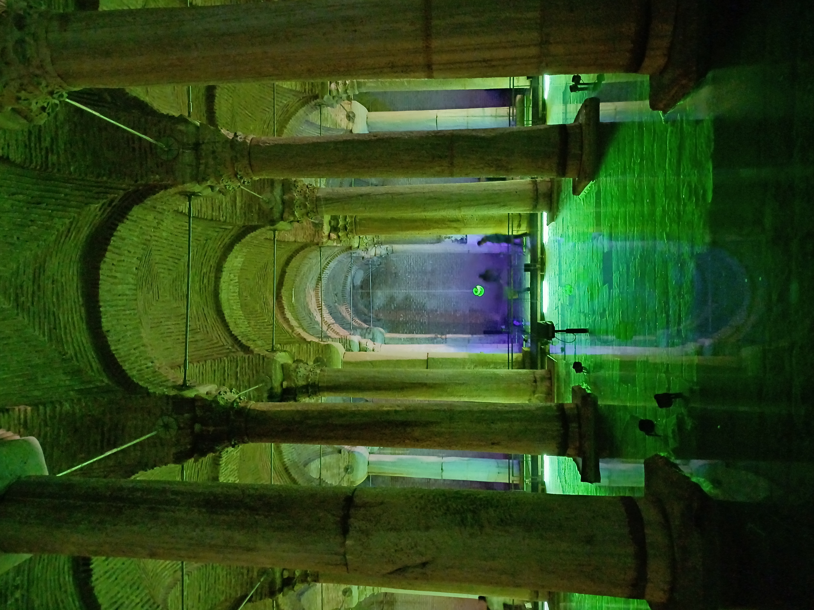
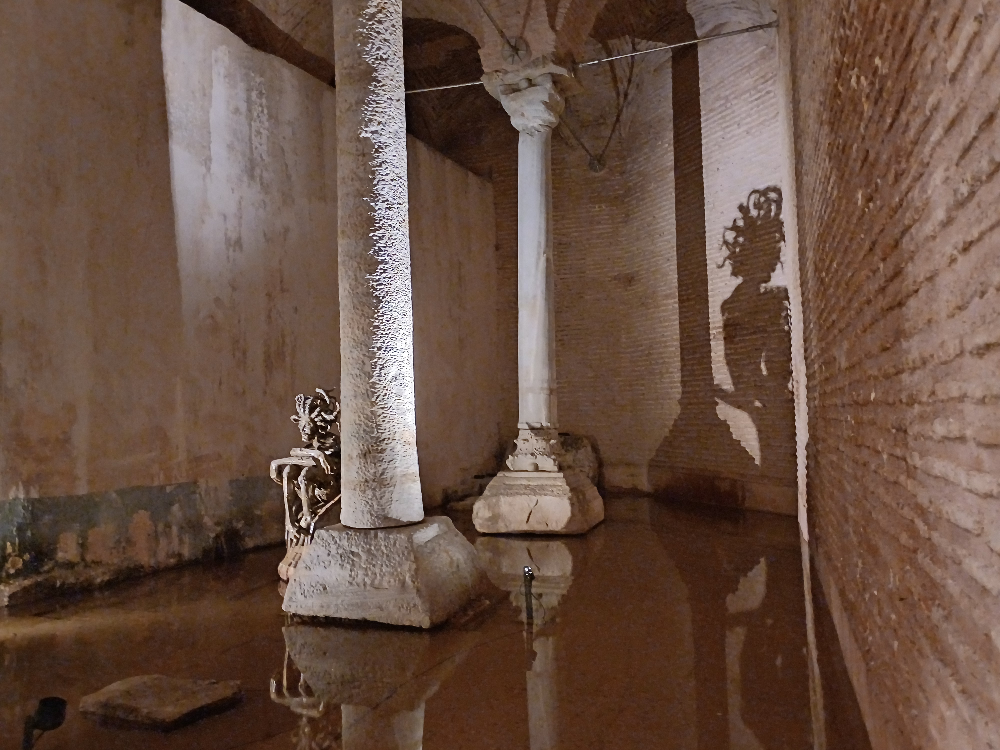

La roca que sería
2025
Fotografía
La mirada que me convertiría en roca podría estar escondida en la siguiente esquina. El chapoteo de mis pisadas en el agua resonaba en la cueva y en ese silencio me parecía como tambores de guerra llamando a la batalla.

Cisterna de Basílica, Estambul
Ella debía oírme, no tengo ninguna duda. ¿por qué no me atacaba? Cada nuevo pasillo recorrido me acercaba más a la muerte inevitable, pero al mismo tiempo, cada cuerpo endurecido que me encontraba lo sentía como una batalla ganada.
Un chapoteo que no era el mío resonó en las paredes. La piel se me erizó. Escuché una risa infantil y me lancé a protegerme detrás de un cuerpo en roca de algún otro desafortunado.
Me asomé debajo de un brazo de la estatua, que se le quedó en alto, intentándo taparse el rostro pero sin éxito. Entonces, vi su sombra proyectada sobre un muro.

Cisterna de Basílica, Estambul
Ella esperaba tranquila, sin prisa. Sabía que tenía todo el tiempo del mundo y que yo finalmente iría a ella. ¿Para qué apresurarse?
Saqué mi espada. No serviría de nada, pero al menos quería morir luchando.
No podía elegir no morir. Pero al menos, podía elegir la roca que sería.
Vuelve arriba